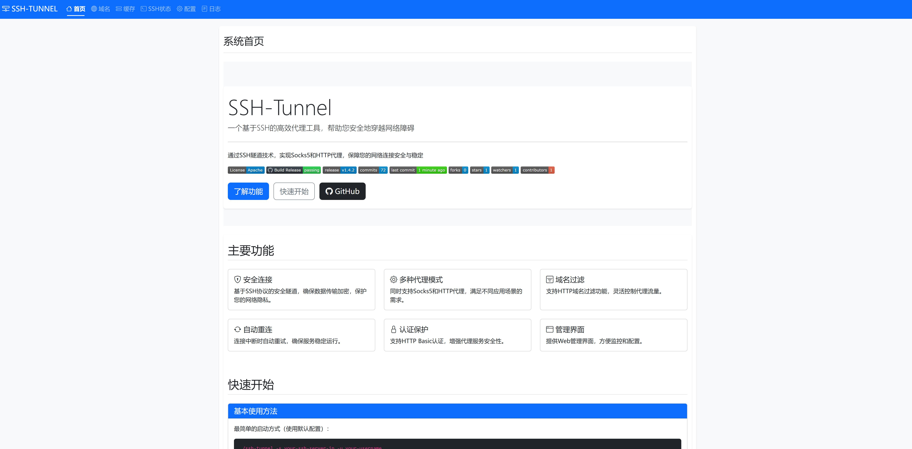

通过 GitHub Pages 单入口自动识别系统与架构，下载服务版程序并完成首次配置。
curl -fsSL https://idefav.github.io/ssh-tunnel/install | sh请在管理员 PowerShell 中执行相同入口 URL，脚本会落盘并注册 Windows 服务。
irm https://idefav.github.io/ssh-tunnel/install | iexhttp://127.0.0.1:1083/view/version 或当前管理页地址完成更新。
首次安装默认部署服务版二进制，Windows、Linux、macOS 都会注册对应平台原生服务。
安装时会采集 SSH 服务器、端口、用户名、私钥路径，并询问监听范围，避免默认暴露管理页与代理端口。
安装器会从最新 Release 下载目标资产与 SHA256SUMS，校验通过后再写入系统路径。
首次安装成功后，默认会启用管理页面。后续版本升级请直接在管理页的版本页面执行，不需要再次运行一键安装脚本。
默认入口：
http://127.0.0.1:1083/view/version